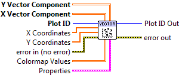
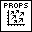

Vector Field Plot¶
Display a field of vector arrows.
Provide two 2D arrays, giving the X Vector Component and Y Vector Component at each point on the grid. Arrows are drawn starting at each grid location; their length is proportional to the vector magnitude.
The overall size of all vectors can be changed via the Arrow Scale setting. In keeping with industry practice, this value is in data units per pixel. In other words, if Arrow Scale were set to 10, a vector with magnitude 50 in data units would be 5 pixels long.
Vectors are colored black by default. To use a colormap, supply a 2D array to Colormap Values. Its values will be used to color the arrows, according to the selected colormap. A solid color may be selected via Color in the property cluster.

 Plot ID/Plot ID Out
Plot ID/Plot ID Out- Plot identifier. Plot ID Out always contains the same value as Plot ID.
 X Coordinates
X Coordinates- Optional 1-D array giving X axis coordinates. Defaults to 0..NX-1, where NX is the size of the data’s second dimension.
- Y Coordinates
- Optional 1-D array giving Y axis coordinates. Defaults to 0..NY-1, where NY is the size of the data’s first dimension.
 X Vector Component
X Vector Component- X component at each point.
- Y Vector Component
- Y component at each point.
- Colormap Values
- Optional 2D array which will be used to color the arrows.
-  Properties
Property cluster, available under the “Properties” subpalette.
 Color
Color- Arrow color. May be a PlotColor or LabVIEW color.
 Arrow Scale
Arrow Scale- Arrow scale factor, in data units per pixel. For example, a value of 10 would mean that a magnitude-50 vector was 5 pixels long. Default is to pick an appropriate scale factor automatically.
 Colormap
ColormapControls the colormap used to shade the arrows, when Arrow Color is set to Automatic.
 Map
Map- Colormap to use. See Colormaps for more info.
- Value Min
- Lower range for colormapped data; values smaller than this will all be plotted with the first color in the colormap.
- Value Max
- Upper range for colormapped data; values larger than this will all be plotted with the last color in the colormap.
- Scaling
- Colormap scaling mode. Currently only linear scaling is supported.
 Reverse
Reverse- Flip the colormap; for example, if a map has 0.0 as black and 1.0 as white, this will assign 0.0 as white and 1.0 as black.
- Display
Controls general appearance of the plot.
- Alpha
- Alpha blending value for this object (0.0 to 1.0). Default is 1.0 (fully opaque).
- Z Order
- Stacking order. Default is chosen based on the object type.

 Error In/Out
Error In/Out- Terminals for standard error functionality.
Example¶
Download Vector Field.vi,
or see Examples for a complete list of examples.
Axis Types¶
This VI supports rectangular axes. Use with polar axes will result in 402905 - Operation Not Supported for Polar Plot. Likewise, only linear scales are supported. Use with log or symlog axes will result in 402906 - Operation Not Supported for Axis Scale.
Errors¶
Other information¶
If an empty array is provided for X Vector Component or Y Vector Component, this VI does nothing.
If a non-finite value appears in X Coordinates or Y Coordinates, the corresponding row or column is not displayed. A non-finite value in X Vector Component or Y Vector Component will result in the corresponding arrow not being displayed.
If the sizes of any of the inputs are not the same, only the overlapping region will be displayed. If a zero-size array is provided for any of X Coordinates, Y Coordinates, or Colormap Value, it will be ignored.
A non-finite, zero, or negative value for Arrow Scale will be ignored.